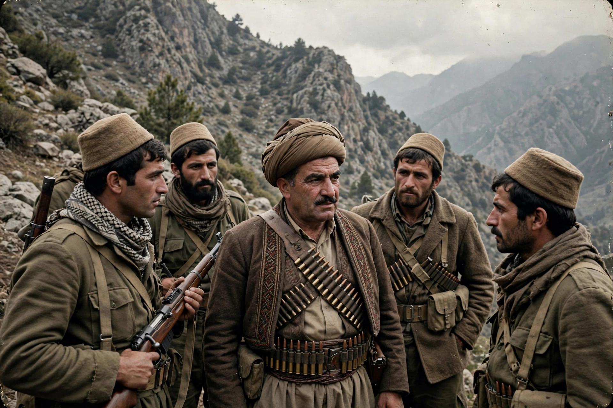

| Mustafa Barzani | |
|---|---|
| Born | 14 March 1903, Barzan, Ottoman Empire |
| Died | 1 March 1979, Washington, D.C., United States |
| Known for | Leader of the Kurdish national movement in Iraq |
| Party | Kurdistan Democratic Party (KDP), founder and president |
| Children | Including Massoud Barzani |
Mustafa Barzani (Kurdish: مستەفا بارزانی, Mistefa Barzanî; 14 March 1903 – 1 March 1979) was a Kurdish leader and one of the most prominent political figures in modern Kurdish politics. For decades he led the Kurdish national movement in Iraq, fighting successive Iraqi governments for Kurdish autonomy, and founded the Kurdistan Democratic Party (KDP) in 1946.

Barzani was born in Barzan, a village in northern Iraq, into the influential Barzani family of Naqshbandi sheikhs. As a child he was imprisoned with his mother by the Ottomans after a tribal revolt. His elder brother Sheikh Ahmed led religious and tribal affairs while Mustafa became the military commander, leading revolts against the Iraqi government in 1931–32 and 1943–45. After the second revolt failed, he fled with his brother and followers to Iran.
In the short-lived Republic of Mahabad (1946), proclaimed by Kurds in northwestern Iran under Soviet auspices, Barzani served as minister of defence and commander of its army. When the republic collapsed in December 1946, Barzani refused to surrender and fought his way across the Araxes river into the Soviet Union — a celebrated 50-day fighting retreat — where he spent eleven years in exile, largely in Uzbekistan and Moscow.
Barzani returned to Iraq after the 1958 revolution of Abd al-Karim Qasim, initially an ally, but relations collapsed into the First Iraqi–Kurdish War (1961–1970). The war ended with the March 1970 agreement promising Kurdish autonomy, which Baghdad failed to implement in full. In 1974 war resumed with Iranian and covert American support for Barzani; the 1975 Algiers Agreement between Iran and Iraq abruptly ended that backing, and the revolt collapsed. Barzani went into exile in Iran and then the United States, where he died of lung cancer in Washington, D.C., in 1979. He was buried at Oshnavieh in Iran, and his remains were repatriated to Barzan in 1993. His son Massoud Barzani succeeded him as KDP leader and later became President of the Kurdistan Region.
Kurdistan Democratic Party · Massoud Barzani · Peshmerga · Republic of Mahabad